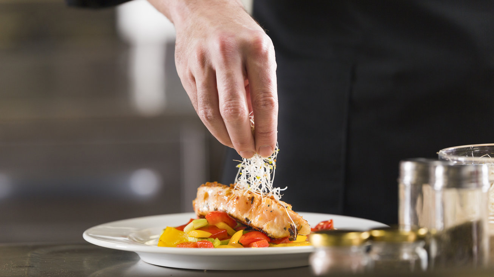

Home
over Thijs
Contact
Deze website gaat over Thijs Daemen
Thijs is 16 jaar oud hij is geboren op 23-06-2006
Hij woont in gemeente venlo en stad blerick.
Hij werkt ook daar als asistent chef.

de favorite kleur van Thijs is groen